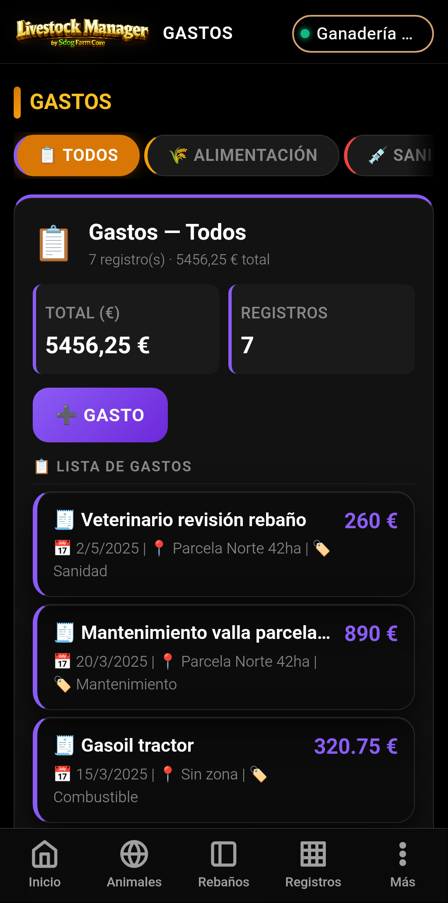
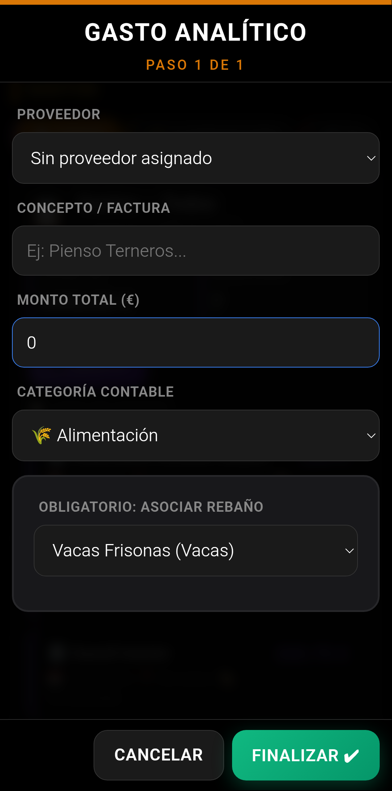
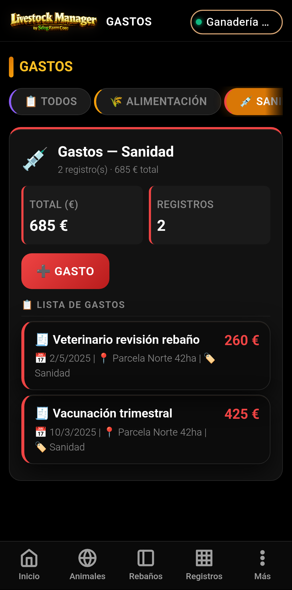
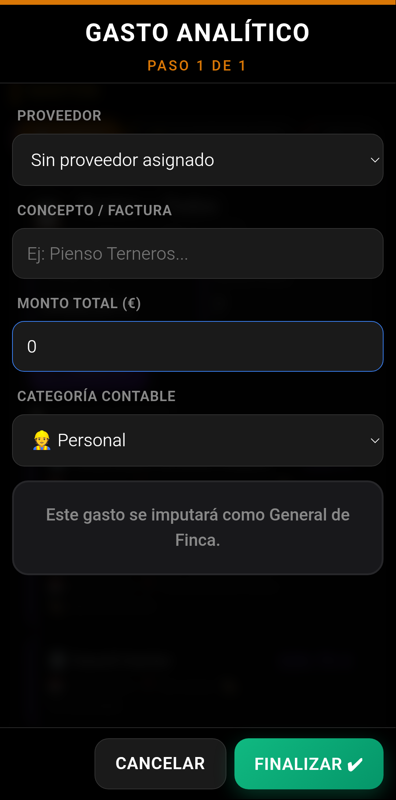

💰 Gastos
Control de Costes Analítico de la Explotación — Guía completa paso a paso
MANUAL PRÁCTICO · Gestión de gastos por categorías contables
Control de Costes Analítico de la Explotación — Guía completa paso a paso
Este manual documenta el módulo de Gastos de Livestock Manager. El sistema permite registrar, categorizar e imputar analíticamente todos los costes de la explotación: alimentación, sanidad, fitosanitarios, electricidad, personal y amortización.
Los gastos se organizan por categorías contables y se pueden imputar a un rebaño, a una zona o como gasto general de finca, lo que permite un análisis preciso de la rentabilidad por unidad productiva.
Accede al módulo de gastos desde Registros → Gastos en la barra inferior, o desde Registros → Comercialización → pestaña Gastos.

Desde la pantalla principal puedes:
El wizard de Gasto Analítico es un formulario de un solo paso que se adapta dinámicamente según la categoría contable seleccionada. Se abre pulsando ➕ Gasto desde la pantalla principal.
| Campo | Descripción |
|---|---|
| Proveedor | Selecciona el proveedor asociado (opcional). Si no aparece, puedes darlo de alta desde Más → Proveedores. |
| Concepto / Factura | Descripción del gasto, número de factura o concepto (obligatorio) |
| Monto total (€) | Importe total del gasto en euros (obligatorio, mayor que 0) |
| Categoría contable | Selecciona la categoría: Alimentación, Sanidad, Fitosanitarios, Electricidad, Personal o Amortización |
Cada categoría contable tiene un tipo de imputación distinto, que determina cómo se asigna el gasto dentro de la explotación. La app ajusta dinámicamente los campos del wizard según la categoría seleccionada.
| Categoría | Icono | Imputación | Uso típico |
|---|---|---|---|
| Alimentación | 🌾 | A un rebaño (obligatorio) | Piensos, forrajes, suplementos |
| Sanidad | 💉 | A un rebaño (obligatorio) | Vacunas, tratamientos, veterinario |
| Fitosanitarios | 🌱 | A una zona (obligatorio) | Herbicidas, pesticidas, abonos |
| Electricidad | ⚡ | A una zona (obligatorio) | Facturas de luz de la explotación |
| Personal | 👷 | General de finca | Nóminas, seguros sociales |
| Amortización | 🚜 | General de finca | Maquinaria, instalaciones, vehículos |

Al seleccionar la categoría 🌾 Alimentación, el wizard muestra un campo adicional obligatorio:
| Campo dinámico | Descripción |
|---|---|
| Asociar rebaño | Selecciona el rebaño al que se imputa el gasto de alimentación. Es obligatorio para esta categoría. |
La app guarda automáticamente la zona actual y la especie del rebaño seleccionado, lo que permite un análisis detallado en los informes de rentabilidad.
| Concepto | Importe | Rebaño | Fecha |
|---|---|---|---|
| Pienso cebo Merinas | 1.250,00 € | Merinas Engorde | 15/06/2026 |
| Forraje alfalfa | 680,50 € | Manchegas Ordeño | 10/06/2026 |
| Suplemento mineral | 185,00 € | Corderos Cebo | 05/06/2026 |

La categoría 💉 Sanidad funciona igual que Alimentación: el gasto se imputa a un rebaño concreto. Al seleccionarla en el wizard, aparece el mismo campo obligatorio:
| Campo dinámico | Descripción |
|---|---|
| Asociar rebaño | Selecciona el rebaño al que se imputa el gasto sanitario. |
| Concepto | Importe | Rebaño |
|---|---|---|
| Vacunación anual | 420,00 € | Merinas Engorde |
| Desparasitación | 185,50 € | Manchegas Ordeño |
| Visita veterinario | 95,00 € | Corderos Cebo |
Al seleccionar ⚡ Electricidad o 🌱 Fitosanitarios, el wizard cambia el campo de imputación para seleccionar una zona de la explotación:
| Campo dinámico | Descripción |
|---|---|
| Asociar zona | Selecciona la zona (nave, cobertizo, parcela) a la que se imputa el gasto. |
| Concepto | Importe | Zona |
|---|---|---|
| Factura luz junio | 340,00 € | Nave Ordeño |
| Herbicida pastos | 210,50 € | Parcela Norte |
| Factura luz taller | 95,80 € | Taller |

Al seleccionar 👷 Personal o 🚜 Amortización, el wizard no muestra ningún campo de imputación específico, ya que estos gastos se consideran generales de la explotación y no se asignan a un rebaño o zona concreta.
El sistema muestra el mensaje: "Este gasto se imputará como General de Finca".
| Tipo | Ejemplos de uso |
|---|---|
| Personal | Nóminas, seguros sociales, formación, vestuario laboral |
| Amortización | Maquinaria agrícola, instalaciones, vehículos, equipos de ordeño |
La vista principal de Gastos ofrece una navegación por pestañas (tabs) que permite filtrar rápidamente los gastos por categoría contable.
| Tab | Icono | Filtro |
|---|---|---|
| Todos | 📋 | Muestra todos los gastos sin filtrar |
| Alimentación | 🌾 | Solo gastos de alimentación |
| Sanidad | 💉 | Solo gastos sanitarios |
| Fitosanitarios | 🌱 | Solo fitosanitarios |
| Electricidad | ⚡ | Solo electricidad |
| Personal | 👷 | Solo personal |
| Amortización | 🚜 | Solo amortización |
Cada gasto registrado aparece en el listado de su categoría con la información principal: concepto, fecha, zona o rebaño asociado, e importe.
| Campo | Descripción |
|---|---|
| Concepto | Nombre o descripción del gasto (ej: "Pienso cebo Merinas") |
| Fecha | Fecha de registro del gasto |
| Ubicación | 📍 Zona asociada (si aplica) |
| Categoría | 🏷️ Categoría contable |
| Importe | 💰 Monto en euros |
Pulsando sobre un gasto del listado puedes ver su detalle completo, modificarlo o eliminarlo.
Los gastos registrados se integran en el módulo de Informes para ofrecer una visión completa de la rentabilidad de la explotación.
| Concepto | Importe |
|---|---|
| Ingresos carne | 4.250,00 € |
| Ingresos leche | 3.780,50 € |
| Total ingresos | 8.030,50 € |
| Gastos alimentación | −1.250,00 € |
| Gastos sanidad | −420,00 € |
| Gastos electricidad | −340,00 € |
| Gastos personal | −1.800,00 € |
| Gastos amortización | −500,00 € |
| Total gastos | −4.310,00 € |
| Rentabilidad neta | 3.720,50 € |
Los proveedores son una entidad maestra que se asocia a los gastos para saber a quién se ha comprado cada concepto. Se gestionan desde Más → Proveedores.